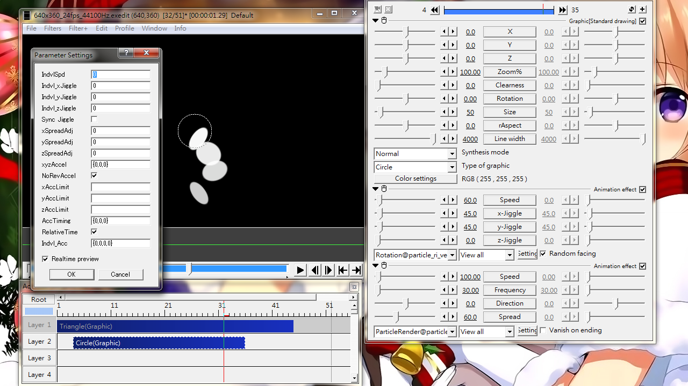

Fig05: setting panel for Rotation@particle_ri_ver3
Rotation
Add variation to rotation speed.
Sliders
Speed
Angular speed (Angle per second). Common for all axis.
x-Jiggle
Max rotation angle along x-axis
y-Jiggle
Max rotation angle along y-axis
z-Jiggle
Max rotation angle along z-axis
Check box
Random facing
Randomize initial rotation angle. Otherwise rotation will loops through 0 to #-Jiggle by default. It loops through Rand to #-Jiggle if checked.
Setting dialog
IndvlSpd
Define the range of angular speed to be chosen for each particle.
Indvl_xJiggle
Define the range of x-rotation angle to be chosen for each particle.
Indvl_yJiggle
Define the range of y-rotation angle to be chosen for each particle.
Indvl_zJiggle
Define the range of z-rotation angle to be chosen for each particle.
Sync Jiggle
When checked, all particles rotate in sync
xSpreadAdj
Angle to be added to initial x-rotation angle per second
ySpreadAdj
Angle to be added to initial y-rotation angle per second
zSpreadAdj
Angle to be added to initial z-rotation angle per second
xyzAccel
Add time-dependent change to rotation speed
Applies to each particle independently
Input format: {Angular acceleration for x, Angular acceleration for y, Angular acceleration for z}
If only a single value is set, only angular acceleration for z will be set.
Allows negative value for deceleration
NoRevAccel
No reverse acceleration. When checked, rotation speed has a minimum of zero and stays at zero once it reach zero. When unchecked, it will accelerate in the opposite direction after reaching zero rotation speed.
xAccLimit
Upper limit for x-rotation speed. Positive value only, regardless of rotation direction.
yAccLimit
Upper limit for y-rotation speed. Positive value only, regardless of rotation direction.
zAccLimit
Upper limit for z-rotation speed. Positive value only, regardless of rotation direction.
AccTiming
Define when angular acceleration (xyzAccel) starts to take effect. Values in milliseconds
Input format: {time-x,time-y,time-z}
A single value will set time-z only
RelativeTime
Change the definition of "time zero" for use with AccTiming
Unchecked: The start of the object is counted as zero
Checked: zero is counted from the moment a particle is emitted.
Indvl_Acc
Individual acceleration and timing. The range of angular acceleration and corresponding timing from which will be randomly chosen.
Standard form: {x-Acceleration range,y-Acceleration range,z-Acceleration range, shared timing}
Expanded form: {x-Acceleration range,y-Acceleration range,z-Acceleration range, time range-x,time range-y,time range-z}
A single value will only set z-Acceleration range.